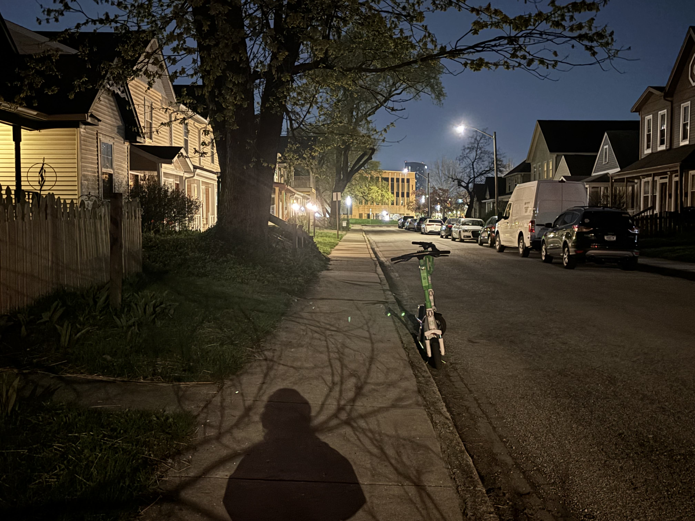

Sound Walk
April 12, 2025
Adobe Audition, iPhone mic
My chosen theme was my work day, however, I specifically narrowed it down to the moments I have to myself. Which included the moments of wake, the walk there, my ten minute break, and my walk back home. Currently, as many might be able to relate, I unfortunately dislike my job and the city I live in. I wanted to capture my disdain and lack of excitement when I have to get up so early for a job I already hate being at. Of course, this mindset follows me throughout the day, while I’m there, and even when I clock out. So, I included those moments in this “walk” as well. And yes, once I did find a dead black cat on the sidewalk I always walked down on my way to work. I remember thinking it was a sign to quit my job. I know everything is temporary, and there will be great outcomes to the sacrifices I’m in my current life. I hope everyone can appreciate their own sacrifices they perform everyday for a better future!